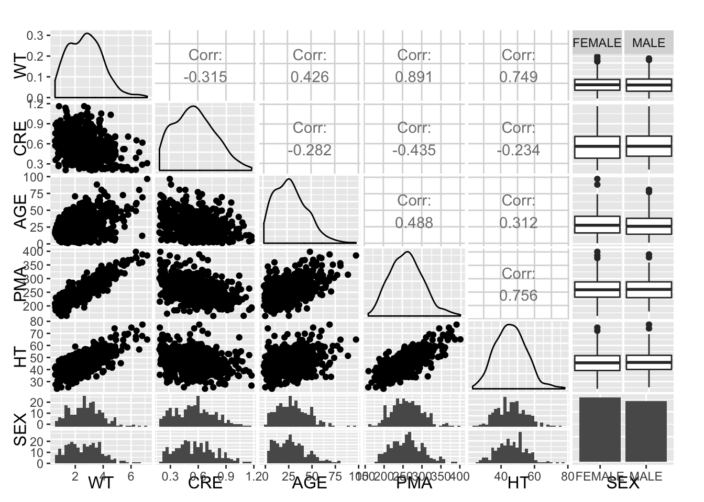

2 Demographics Background
library(knitr)
library(PKPDmisc)
library(tidyverse)source("../scripts/generate_demographics.R")
#>
#> Attaching package: 'magrittr'
#> The following object is masked from 'package:purrr':
#>
#> set_names
#> The following object is masked from 'package:tidyr':
#>
#> extractThe following covariance matrix was generated from fitting the baseline demographics from a couple hundred neonates in a hospital setting, primarily the NICU.
sample_ids <- generate_demographics(500) %>%
## generate males and females
mutate(SEX = factor(rbernoulli(nrow(.)),
labels = c("FEMALE", "MALE")))This functionality is encapsulated in the script generate_demographics.R for use in other files.
GGally::ggpairs(sample_ids)
#> `stat_bin()` using `bins = 30`. Pick better value with `binwidth`.
#> `stat_bin()` using `bins = 30`. Pick better value with `binwidth`.
#> `stat_bin()` using `bins = 30`. Pick better value with `binwidth`.
#> `stat_bin()` using `bins = 30`. Pick better value with `binwidth`.
#> `stat_bin()` using `bins = 30`. Pick better value with `binwidth`.
head(sample_ids)
#> # A tibble: 6 × 6
#> WT CRE AGE PMA HT SEX
#> <dbl> <dbl> <dbl> <dbl> <dbl> <fctr>
#> 1 3.263 0.557 9.99 270 45.9 FEMALE
#> 2 4.389 0.423 55.58 348 51.0 MALE
#> 3 2.659 0.720 36.76 242 53.1 FEMALE
#> 4 0.921 0.643 39.31 241 34.4 FEMALE
#> 5 2.898 0.269 33.18 279 41.5 FEMALE
#> 6 3.941 0.563 31.29 256 58.3 MALEdevtools::session_info()
#> Session info --------------------------------------------------------------
#> setting value
#> version R version 3.3.2 (2016-10-31)
#> system x86_64, mingw32
#> ui RTerm
#> language (EN)
#> collate English_United States.1252
#> tz America/New_York
#> date 2016-11-17
#> Packages ------------------------------------------------------------------
#> package * version date source
#> assertthat 0.1 2013-12-06 CRAN (R 3.3.2)
#> bookdown 0.2 2016-11-12 CRAN (R 3.3.2)
#> codetools 0.2-15 2016-10-05 CRAN (R 3.3.2)
#> colorspace 1.2-7 2016-10-11 CRAN (R 3.3.2)
#> crayon 1.3.2 2016-06-28 CRAN (R 3.3.2)
#> DBI 0.5-1 2016-09-10 CRAN (R 3.3.2)
#> devtools 1.12.0 2016-06-24 CRAN (R 3.3.2)
#> digest 0.6.10 2016-08-02 CRAN (R 3.3.2)
#> dplyr * 0.5.0 2016-06-24 CRAN (R 3.3.2)
#> evaluate 0.10 2016-10-11 CRAN (R 3.3.2)
#> GGally 1.2.9.9999 2016-11-08 Github (ggobi/ggally@b072444)
#> ggplot2 * 2.1.0.9001 2016-11-07 Github (hadley/ggplot2@70c3d69)
#> gtable 0.2.0 2016-02-26 CRAN (R 3.3.2)
#> htmltools 0.3.5 2016-03-21 CRAN (R 3.3.2)
#> httpuv 1.3.3 2015-08-04 CRAN (R 3.3.2)
#> knitr * 1.15 2016-11-09 CRAN (R 3.3.2)
#> labeling 0.3 2014-08-23 CRAN (R 3.3.2)
#> lazyeval 0.2.0 2016-06-12 CRAN (R 3.3.2)
#> magrittr * 1.5 2014-11-22 CRAN (R 3.3.2)
#> MASS 7.3-45 2016-04-21 CRAN (R 3.3.2)
#> memoise 1.0.0 2016-01-29 CRAN (R 3.3.2)
#> mime 0.5 2016-07-07 CRAN (R 3.3.2)
#> miniUI 0.1.1 2016-01-15 CRAN (R 3.3.2)
#> munsell 0.4.3 2016-02-13 CRAN (R 3.3.2)
#> PKPDmisc * 0.4.4.9000 2016-11-02 Github (dpastoor/PKPDmisc@beae2a6)
#> plyr 1.8.4 2016-06-08 CRAN (R 3.3.2)
#> purrr * 0.2.2 2016-06-18 CRAN (R 3.3.2)
#> R6 2.2.0 2016-10-05 CRAN (R 3.3.2)
#> RColorBrewer 1.1-2 2014-12-07 CRAN (R 3.3.2)
#> Rcpp 0.12.7 2016-09-05 CRAN (R 3.3.2)
#> readr * 1.0.0 2016-08-03 CRAN (R 3.3.2)
#> reshape 0.8.6 2016-10-21 CRAN (R 3.3.2)
#> reshape2 1.4.2 2016-10-22 CRAN (R 3.3.2)
#> rmarkdown 1.1 2016-10-16 CRAN (R 3.3.2)
#> scales 0.4.0.9003 2016-11-07 Github (hadley/scales@d58d83a)
#> shiny 0.14.2 2016-11-01 CRAN (R 3.3.2)
#> stringi 1.1.2 2016-10-01 CRAN (R 3.3.2)
#> stringr 1.1.0 2016-08-19 CRAN (R 3.3.2)
#> testthat 1.0.2 2016-04-23 CRAN (R 3.3.2)
#> tibble * 1.2 2016-08-26 CRAN (R 3.3.2)
#> tidyr * 0.6.0 2016-08-12 CRAN (R 3.3.2)
#> tidyverse * 1.0.0 2016-09-09 CRAN (R 3.3.2)
#> withr 1.0.2 2016-06-20 CRAN (R 3.3.2)
#> xtable 1.8-2 2016-02-05 CRAN (R 3.3.2)
#> yaml 2.1.13 2014-06-12 CRAN (R 3.3.2)